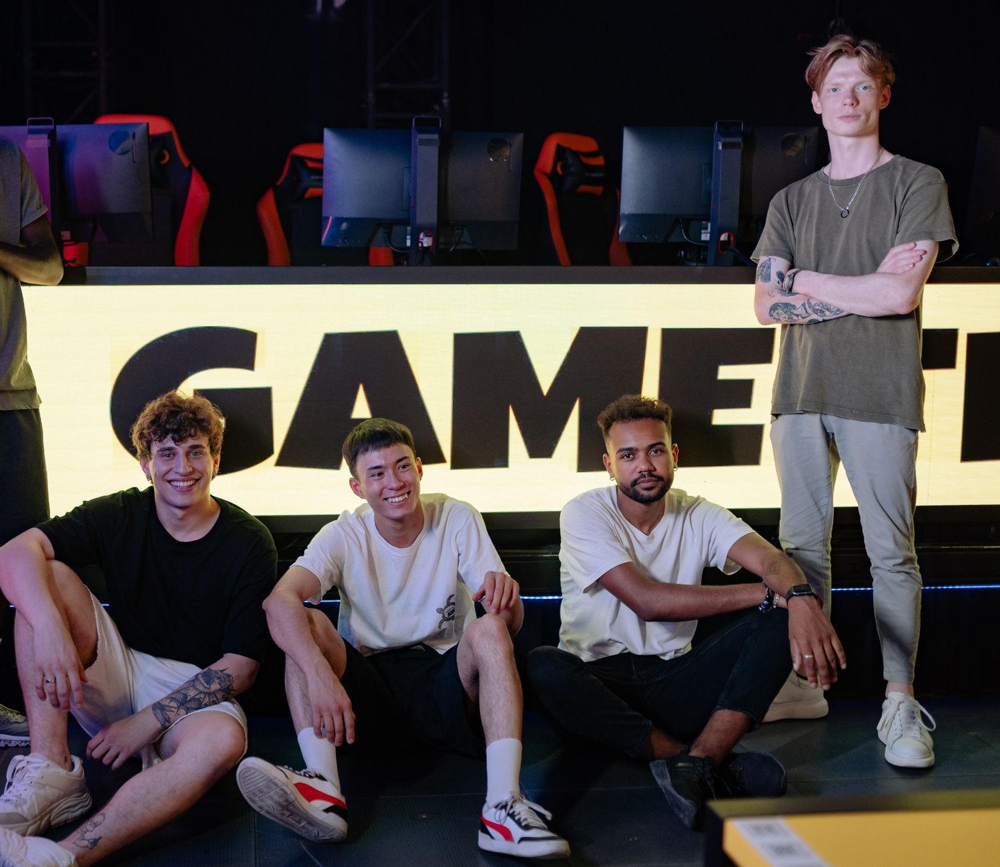

The impact of jL on the roster
When a competitive esports team makes a roster change, the transition period can be fraught with challenges. However, for XTQZZZ and his squad, integrating jL into the active lineup was a surprisingly positive experience. The coach noted that the team was genuinely enthusiastic about the change, viewing it not as a disruption but as an opportunity to evolve. In the high-stakes environment of professional Counter-Strike, having a player who can seamlessly blend into the team culture while bringing unique mechanical skills is a rare commodity.
The pressure to perform at LAN events and online tournaments means that every roster move is scrutinized by fans and analysts alike. Fortunately, this transition was met with open arms by the entire organization. jL’s arrival meant more than just swapping out one player for another. It represented a shift in the team's collective mindset. XTQZZZ emphasized that the players were really happy to have something new to work with. This enthusiasm translated into their practice sessions, where the squad dedicated extra hours to understanding jL's tendencies, preferred angles, and utility usage.
The willingness of the existing roster to adapt to a new teammate speaks volumes about the team's underlying chemistry and their shared commitment to achieving victory on the server. Rather than resisting the change, the veterans embraced the opportunity to mentor and learn from their new teammate, setting a strong foundation for future success.
Tactical shifts and fresh perspectives
Every player brings a unique fingerprint to the game, and jL is no exception. His addition prompted XTQZZZ to re-evaluate some of the team's established tactical protocols. Instead of forcing jL into pre-existing molds, the coaching staff opted to build new strategies that highlighted his strengths. This collaborative approach to tactics ensured that the team didn't become predictable to their opponents.
By embracing these tactical shifts, the team managed to keep their opponents guessing. XTQZZZ pointed out that in modern esports, predictability is a death sentence. Having a new player allows the team to rewrite their playbook, giving them a distinct advantage in high-pressure tournament environments where opponents might have extensively studied their past matches. This proactive approach to team development is exactly what separates good teams from great ones, showing a commitment to evolution rather than stagnation.
XTQZZZ on adapting to new playstyles
We were really happy to have something new to work with, because it allowed us to explore different dimensions of the game that we hadn't touched before.
This sentiment from XTQZZZ perfectly encapsulates the philosophy of continuous improvement in esports. When a team relies on the same five players for an extended period, they can sometimes fall into a creative rut. The introduction of jL acted as a catalyst for innovation. The coaching staff and players had to communicate more actively, dissecting their own gameplay to figure out how best to integrate the new piece into their intricate puzzle.
The adaptation process wasn't just about learning jL's playstyle; it was also about teaching him the team's core values and communication standards. XTQZZZ took pride in how quickly jL assimilated into their system. The player's willingness to learn and adapt, combined with the veteran players' patience, created a fertile environment for rapid improvement. This synergy is crucial for any team aspiring to lift trophies on the international stage.
Looking ahead for the team
With jL comfortably settled into the roster, the focus now shifts to long-term consistency and competing at the highest level. XTQZZZ is optimistic about the team's trajectory, noting that the foundational work laid during the initial integration phase will pay dividends in upcoming tournaments. The team's renewed energy is palpable, and they are eager to test their revamped strategies against top-tier competition.
Tournaments demand peak performance, and having a refreshed tactical playbook gives them an edge over rivals who might still be relying on outdated meta strategies. The coaching staff is already looking at the upcoming calendar, identifying key matchups where jL's specific skill set can be the deciding factor. As the competitive season progresses, the squad will face numerous challenges that will test their resilience and cohesion. To gain further insights into how teams manage performance and set long-term goals in the competitive landscape, you can read our related article on zont1x on Team Performance and Future Esports Goals at https://dhyey.bond/blog/zont1x-on-team-performance-and-future-esports-goals/.
See Also
If you enjoyed this Esports News article, check out zont1x on Team Performance and Future Esports Goals for more useful reading.